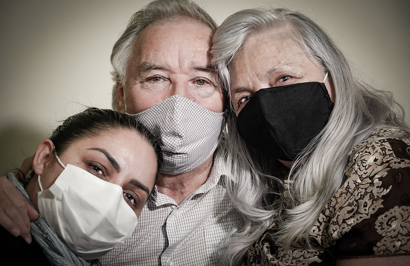

A escola vai até os alunos para levar conhecimento e carinho
Mais de 500 mil produtores rurais se adaptam para garantir o cultivo

Empreendedores se adaptam e Governo auxilia empresas a atravessarem momento desafiador

A rotina de quem se dedica a salvar vidas em meio à pandemia